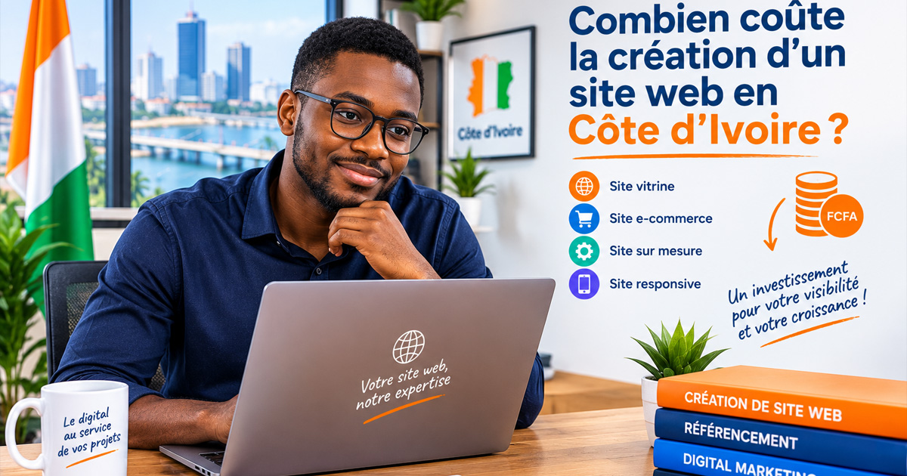

« Combien coûte un site web ? » est la première question que nous recevons. La réponse honnête est que le prix dépend entièrement du projet. Un site vitrine simple et un site e-commerce avec des milliers de produits n'ont pas le même coût, ni les mêmes délais. Voici comment estimer un budget réaliste pour votre projet web en Côte d'Ivoire.
1. Le type de site : vitrine vs e-commerce vs sur-mesure
Le premier critère de prix est la nature même du site :
- Site vitrine : idéal pour présenter votre activité, vos services, et faciliter la prise de contact. C'est l'option la plus accessible pour démarrer une présence en ligne professionnelle.
- Site e-commerce : si vous vendez des produits en ligne, il faut ajouter un catalogue, des fiches produits, un panier, un processus de paiement, et la gestion des commandes. Le périmètre est plus large.
- Application web / plateforme sur-mesure : pour les projets nécessitant une logique spécifique (gestion de stock complexe, portail client, outil interne), le développement est plus technique et nécessite plus de temps.
2. Le nombre de pages et la quantité de contenu
Un site avec 5 pages (accueil, services, à propos, contact, FAQ) sera naturellement plus rapide à concevoir qu'un site avec 30 pages. Le nombre de pages impacte la structure du site, le travail de mise en page, et le volume de contenu à rédiger.
Pensez dès le départ à votre architecture de contenus : quelles pages sont essentielles pour vos clients, et lesquelles peuvent être ajoutées plus tard ?
3. Le design : template ou création sur-mesure ?
Un site réalisé à partir d'un template professionnel est plus rapide et plus économique qu'un design entièrement conçu sur-mesure. Les templates modernes offrent un rendu très soigné, sont responsives par défaut, et conviennent parfaitement à de nombreux projets.
Le design sur-mesure est pertinent lorsque vous avez une identité visuelle très spécifique, ou que votre secteur d'activité exige un positionnement visuel unique. Il implique des maquettes, des itérations et un travail graphique plus poussé.
4. Les fonctionnalités et la technique
Chaque fonctionnalité ajoutée est un poste de coût distinct :
- Formulaires de contact simples ou avancés (devis, prise de RDV)
- Espace blog avec catégories et tags
- Boutique en ligne avec gestion de stock, livraison et paiement mobile (Wave, Orange Money)
- Multilingue (français + anglais, par exemple)
- Connexion à des outils tiers (CRM, comptabilité, réseaux sociaux)
Un bon agence web vous aidera à prioriser ces fonctionnalités selon votre budget réel, sans compromettre l'expérience utilisateur.
5. Le référencement naturel (SEO) et la maintenance
Un site sans SEO est comme une boutique sans enseigne : difficile à trouver. L'optimisation pour les moteurs de recherche (balises, structure, contenu, vitesse de chargement) est un investissement essentiel. Le référencement local à Abidjan et en Côte d'Ivoire est un levier souvent sous-exploité.
À cela s'ajoute la maintenance : mises à jour de sécurité, sauvegardes, support technique, et éventuels ajouts de contenu réguliers. Un site n'est jamais vraiment « terminé », et un budget maintenance annuel est recommandé pour maintenir le site performant et sécurisé.
Comment préparer votre demande de devis ?

Pour obtenir un devis précis et adapté à votre besoin, préparez ces informations :
- Le type de site souhaité (vitrine, e-commerce, application)
- Une liste approximative des pages souhaitées
- Les fonctionnalités clés nécessaires
- Votre identité visuelle existante (logo, charte graphique)
- Votre calendrier de mise en ligne souhaité
Vous avez un projet web ? BRAIN établit des devis gratuits et adaptés à chaque projet. Contactez-nous pour discuter de votre besoin et recevoir une proposition chiffrée.